-
IIS Parameters Module - Board Members maintenance Screen
16:44:42 PM / 30:57:014 Fail
IIS Parameters Module - Board Members maintenance Screen
07.21.2023 16:44:42 07.21.2023 16:45:39 30:57:014 · #test-id=1FailCRUD testing For Board Members Maintenance ScreenGiven User Navigate to IISP URL loginiisParamsStepdefinitions.HooksClass.addScreenshot(io.cucumber.java.Scenario)screenshot Then log into IISP with valid credentialsiisParamsStepdefinitions.HooksClass.addScreenshot(io.cucumber.java.Scenario)screenshot
Then log into IISP with valid credentialsiisParamsStepdefinitions.HooksClass.addScreenshot(io.cucumber.java.Scenario)screenshot And Click on Parameters Root OPTiisParamsStepdefinitions.HooksClass.addScreenshot(io.cucumber.java.Scenario)screenshot
And Click on Parameters Root OPTiisParamsStepdefinitions.HooksClass.addScreenshot(io.cucumber.java.Scenario)screenshot Then Navigate to BoardMembers maintenance screeniisParamsStepdefinitions.HooksClass.addScreenshot(io.cucumber.java.Scenario)screenshot
Then Navigate to BoardMembers maintenance screeniisParamsStepdefinitions.HooksClass.addScreenshot(io.cucumber.java.Scenario)screenshot Given user input MemberId and CifnoiisParamsStepdefinitions.HooksClass.addScreenshot(io.cucumber.java.Scenario)screenshot
Given user input MemberId and CifnoiisParamsStepdefinitions.HooksClass.addScreenshot(io.cucumber.java.Scenario)screenshot Then Save BoardMembers DetailsiisParamsStepdefinitions.HooksClass.addScreenshot(io.cucumber.java.Scenario)screenshot
Then Save BoardMembers DetailsiisParamsStepdefinitions.HooksClass.addScreenshot(io.cucumber.java.Scenario)screenshot And Retrieve Saved BoardMembers detailsStep skippedThen Delete BoardMembers Code CreatedStep skippedAnd Close BoardMembers maintenance ScreenStep skipped
And Retrieve Saved BoardMembers detailsStep skippedThen Delete BoardMembers Code CreatedStep skippedAnd Close BoardMembers maintenance ScreenStep skipped -
IIS Parameters Module - Charges maintenance Screen
16:45:39 PM / 30:21:014 Pass
IIS Parameters Module - Charges maintenance Screen
07.21.2023 16:45:39 07.21.2023 16:46:00 30:21:014 · #test-id=24PassCRUD testing For Charge Maintenance ScreenGiven User Navigate to IISP URL loginiisParamsStepdefinitions.HooksClass.addScreenshot(io.cucumber.java.Scenario)screenshot Then log into IISP with valid credentialsiisParamsStepdefinitions.HooksClass.addScreenshot(io.cucumber.java.Scenario)screenshot
Then log into IISP with valid credentialsiisParamsStepdefinitions.HooksClass.addScreenshot(io.cucumber.java.Scenario)screenshot And Click on Parameters Root OPTiisParamsStepdefinitions.HooksClass.addScreenshot(io.cucumber.java.Scenario)screenshot
And Click on Parameters Root OPTiisParamsStepdefinitions.HooksClass.addScreenshot(io.cucumber.java.Scenario)screenshot Given Navigate to charges maintenance screeniisParamsStepdefinitions.HooksClass.addScreenshot(io.cucumber.java.Scenario)screenshot
Given Navigate to charges maintenance screeniisParamsStepdefinitions.HooksClass.addScreenshot(io.cucumber.java.Scenario)screenshot Given user input Charge code and charge descriptioniisParamsStepdefinitions.HooksClass.addScreenshot(io.cucumber.java.Scenario)screenshot
Given user input Charge code and charge descriptioniisParamsStepdefinitions.HooksClass.addScreenshot(io.cucumber.java.Scenario)screenshot Then Save Charge DetailsiisParamsStepdefinitions.HooksClass.addScreenshot(io.cucumber.java.Scenario)screenshot
Then Save Charge DetailsiisParamsStepdefinitions.HooksClass.addScreenshot(io.cucumber.java.Scenario)screenshot And Retrieve Saved Charge detailsiisParamsStepdefinitions.HooksClass.addScreenshot(io.cucumber.java.Scenario)screenshot
And Retrieve Saved Charge detailsiisParamsStepdefinitions.HooksClass.addScreenshot(io.cucumber.java.Scenario)screenshot Then Delete Charge Code CreatediisParamsStepdefinitions.HooksClass.addScreenshot(io.cucumber.java.Scenario)screenshot
Then Delete Charge Code CreatediisParamsStepdefinitions.HooksClass.addScreenshot(io.cucumber.java.Scenario)screenshot And Close Charge maintenance ScreeniisParamsStepdefinitions.HooksClass.addScreenshot(io.cucumber.java.Scenario)screenshot
And Close Charge maintenance ScreeniisParamsStepdefinitions.HooksClass.addScreenshot(io.cucumber.java.Scenario)screenshot
-
IIS Parameters Module - Deviation maintenance Screen
16:46:00 PM / 30:26:450 Fail
IIS Parameters Module - Deviation maintenance Screen
07.21.2023 16:46:00 07.21.2023 16:46:26 30:26:450 · #test-id=47FailCRUD testing For Deviation Maintenance ScreenGiven User Navigate to IISP URL loginiisParamsStepdefinitions.HooksClass.addScreenshot(io.cucumber.java.Scenario)screenshot Then log into IISP with valid credentialsiisParamsStepdefinitions.HooksClass.addScreenshot(io.cucumber.java.Scenario)screenshot
Then log into IISP with valid credentialsiisParamsStepdefinitions.HooksClass.addScreenshot(io.cucumber.java.Scenario)screenshot And Click on Parameters Root OPTiisParamsStepdefinitions.HooksClass.addScreenshot(io.cucumber.java.Scenario)screenshot
And Click on Parameters Root OPTiisParamsStepdefinitions.HooksClass.addScreenshot(io.cucumber.java.Scenario)screenshot Then Navigate to deviation maintenance screeniisParamsStepdefinitions.HooksClass.addScreenshot(io.cucumber.java.Scenario)screenshot
Then Navigate to deviation maintenance screeniisParamsStepdefinitions.HooksClass.addScreenshot(io.cucumber.java.Scenario)screenshot Given user input code and Deviation descriptioniisParamsStepdefinitions.HooksClass.addScreenshot(io.cucumber.java.Scenario)screenshot
Given user input code and Deviation descriptioniisParamsStepdefinitions.HooksClass.addScreenshot(io.cucumber.java.Scenario)screenshot Then Save Deviation DetailsiisParamsStepdefinitions.HooksClass.addScreenshot(io.cucumber.java.Scenario)screenshot
Then Save Deviation DetailsiisParamsStepdefinitions.HooksClass.addScreenshot(io.cucumber.java.Scenario)screenshot And Retrieve Saved Deviation detailsStep skippedThen Delete Deviation Code CreatedStep skippedAnd Close Deviation maintenance ScreenStep skipped
And Retrieve Saved Deviation detailsStep skippedThen Delete Deviation Code CreatedStep skippedAnd Close Deviation maintenance ScreenStep skipped -
IIS Parameters Module - Insurance Companies maintenance Screen
16:46:26 PM / 30:36:482 Pass
IIS Parameters Module - Insurance Companies maintenance Screen
07.21.2023 16:46:26 07.21.2023 16:47:03 30:36:482 · #test-id=70PassCRUD testing For Insurance Companies Maintenance ScreenGiven User Navigate to IISP URL loginiisParamsStepdefinitions.HooksClass.addScreenshot(io.cucumber.java.Scenario)screenshot Then log into IISP with valid credentialsiisParamsStepdefinitions.HooksClass.addScreenshot(io.cucumber.java.Scenario)screenshot
Then log into IISP with valid credentialsiisParamsStepdefinitions.HooksClass.addScreenshot(io.cucumber.java.Scenario)screenshot And Click on Parameters Root OPTiisParamsStepdefinitions.HooksClass.addScreenshot(io.cucumber.java.Scenario)screenshot
And Click on Parameters Root OPTiisParamsStepdefinitions.HooksClass.addScreenshot(io.cucumber.java.Scenario)screenshot Then Navigate to Insurance Companies maintenance screeniisParamsStepdefinitions.HooksClass.addScreenshot(io.cucumber.java.Scenario)screenshot
Then Navigate to Insurance Companies maintenance screeniisParamsStepdefinitions.HooksClass.addScreenshot(io.cucumber.java.Scenario)screenshot Given user input Code and DescriptioniisParamsStepdefinitions.HooksClass.addScreenshot(io.cucumber.java.Scenario)screenshot
Given user input Code and DescriptioniisParamsStepdefinitions.HooksClass.addScreenshot(io.cucumber.java.Scenario)screenshot Then Save Insurance Companies DetailsiisParamsStepdefinitions.HooksClass.addScreenshot(io.cucumber.java.Scenario)screenshot
Then Save Insurance Companies DetailsiisParamsStepdefinitions.HooksClass.addScreenshot(io.cucumber.java.Scenario)screenshot And Retrieve Saved Insurance Companies detailsiisParamsStepdefinitions.HooksClass.addScreenshot(io.cucumber.java.Scenario)screenshot
And Retrieve Saved Insurance Companies detailsiisParamsStepdefinitions.HooksClass.addScreenshot(io.cucumber.java.Scenario)screenshot Then Delete Insurance Companies Code CreatediisParamsStepdefinitions.HooksClass.addScreenshot(io.cucumber.java.Scenario)screenshot
Then Delete Insurance Companies Code CreatediisParamsStepdefinitions.HooksClass.addScreenshot(io.cucumber.java.Scenario)screenshot And Close Insurance Companies maintenance ScreeniisParamsStepdefinitions.HooksClass.addScreenshot(io.cucumber.java.Scenario)screenshot
And Close Insurance Companies maintenance ScreeniisParamsStepdefinitions.HooksClass.addScreenshot(io.cucumber.java.Scenario)screenshot
-
IIS Parameters Module - InsuranceType maintenance Screen
16:47:03 PM / 30:41:496 Pass
IIS Parameters Module - InsuranceType maintenance Screen
07.21.2023 16:47:03 07.21.2023 16:47:44 30:41:496 · #test-id=93PassCRUD testing For InsuranceType Maintenance ScreenGiven User Navigate to IISP URL loginiisParamsStepdefinitions.HooksClass.addScreenshot(io.cucumber.java.Scenario)screenshot Then log into IISP with valid credentialsiisParamsStepdefinitions.HooksClass.addScreenshot(io.cucumber.java.Scenario)screenshot
Then log into IISP with valid credentialsiisParamsStepdefinitions.HooksClass.addScreenshot(io.cucumber.java.Scenario)screenshot And Click on Parameters Root OPTiisParamsStepdefinitions.HooksClass.addScreenshot(io.cucumber.java.Scenario)screenshot
And Click on Parameters Root OPTiisParamsStepdefinitions.HooksClass.addScreenshot(io.cucumber.java.Scenario)screenshot Then Navigate to InsuranceType maintenance screeniisParamsStepdefinitions.HooksClass.addScreenshot(io.cucumber.java.Scenario)screenshot
Then Navigate to InsuranceType maintenance screeniisParamsStepdefinitions.HooksClass.addScreenshot(io.cucumber.java.Scenario)screenshot Given user input code and InsuranceType descriptioniisParamsStepdefinitions.HooksClass.addScreenshot(io.cucumber.java.Scenario)screenshot
Given user input code and InsuranceType descriptioniisParamsStepdefinitions.HooksClass.addScreenshot(io.cucumber.java.Scenario)screenshot Then Save InsuranceType DetailsiisParamsStepdefinitions.HooksClass.addScreenshot(io.cucumber.java.Scenario)screenshot
Then Save InsuranceType DetailsiisParamsStepdefinitions.HooksClass.addScreenshot(io.cucumber.java.Scenario)screenshot And Retrieve Saved InsuranceType detailsiisParamsStepdefinitions.HooksClass.addScreenshot(io.cucumber.java.Scenario)screenshot
And Retrieve Saved InsuranceType detailsiisParamsStepdefinitions.HooksClass.addScreenshot(io.cucumber.java.Scenario)screenshot Then Delete InsuranceType Code CreatediisParamsStepdefinitions.HooksClass.addScreenshot(io.cucumber.java.Scenario)screenshot
Then Delete InsuranceType Code CreatediisParamsStepdefinitions.HooksClass.addScreenshot(io.cucumber.java.Scenario)screenshot And Close InsuranceType maintenance ScreeniisParamsStepdefinitions.HooksClass.addScreenshot(io.cucumber.java.Scenario)screenshot
And Close InsuranceType maintenance ScreeniisParamsStepdefinitions.HooksClass.addScreenshot(io.cucumber.java.Scenario)screenshot
-
IIS Parameters Module - Leased Asset maintenance Screen
16:47:44 PM / 03:46:958 Fail
IIS Parameters Module - Leased Asset maintenance Screen
07.21.2023 16:47:44 07.21.2023 22:21:31 03:46:958 · #test-id=116FailCRUD testing For Charge Maintenance ScreenGiven User Navigate to IISP URL loginiisParamsStepdefinitions.HooksClass.addScreenshot(io.cucumber.java.Scenario)screenshot Then log into IISP with valid credentialsiisParamsStepdefinitions.HooksClass.addScreenshot(io.cucumber.java.Scenario)screenshot
Then log into IISP with valid credentialsiisParamsStepdefinitions.HooksClass.addScreenshot(io.cucumber.java.Scenario)screenshot And Click on Parameters Root OPTiisParamsStepdefinitions.HooksClass.addScreenshot(io.cucumber.java.Scenario)screenshot
And Click on Parameters Root OPTiisParamsStepdefinitions.HooksClass.addScreenshot(io.cucumber.java.Scenario)screenshot Then Navigate to Leased Asset maintenance screeniisParamsStepdefinitions.HooksClass.addScreenshot(io.cucumber.java.Scenario)screenshot
Then Navigate to Leased Asset maintenance screeniisParamsStepdefinitions.HooksClass.addScreenshot(io.cucumber.java.Scenario)screenshot And user input Asset code and descriptioniisParamsStepdefinitions.HooksClass.addScreenshot(io.cucumber.java.Scenario)screenshot
And user input Asset code and descriptioniisParamsStepdefinitions.HooksClass.addScreenshot(io.cucumber.java.Scenario)screenshot Then Save Asset DetailsiisParamsStepdefinitions.HooksClass.addScreenshot(io.cucumber.java.Scenario)Then Retrieve Asset detailsStep skippedThen Delete Asset Code CreatedStep skippedAnd Close Asset maintenance ScreenStep skipped
Then Save Asset DetailsiisParamsStepdefinitions.HooksClass.addScreenshot(io.cucumber.java.Scenario)Then Retrieve Asset detailsStep skippedThen Delete Asset Code CreatedStep skippedAnd Close Asset maintenance ScreenStep skipped -
IIS Parameters Module -Product type Screen
22:21:31 PM / 30:27:542 Pass
IIS Parameters Module -Product type Screen
07.21.2023 22:21:31 07.21.2023 22:21:59 30:27:542 · #test-id=139PassCRUD testing For Product Type Maintenance ScreenGiven User Navigate to IISP URL loginiisParamsStepdefinitions.HooksClass.addScreenshot(io.cucumber.java.Scenario)screenshot Then log into IISP with valid credentialsiisParamsStepdefinitions.HooksClass.addScreenshot(io.cucumber.java.Scenario)screenshotAnd Click on Parameters Root OPTiisParamsStepdefinitions.HooksClass.addScreenshot(io.cucumber.java.Scenario)screenshotGiven Open product type maintenanceiisParamsStepdefinitions.HooksClass.addScreenshot(io.cucumber.java.Scenario)screenshot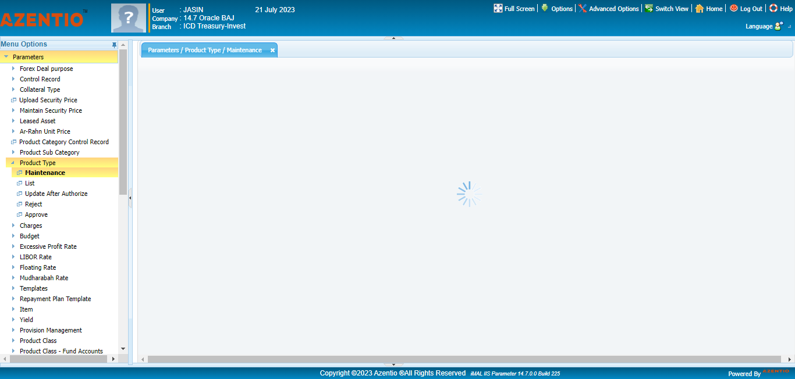And Input product Type Values and saveiisParamsStepdefinitions.HooksClass.addScreenshot(io.cucumber.java.Scenario)screenshot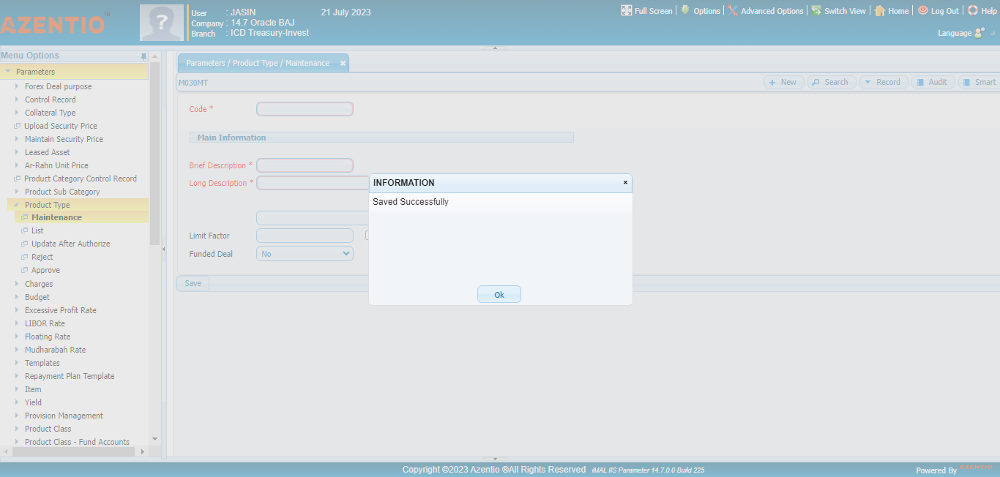And Retrieve Saved Product Type detailsiisParamsStepdefinitions.HooksClass.addScreenshot(io.cucumber.java.Scenario)screenshot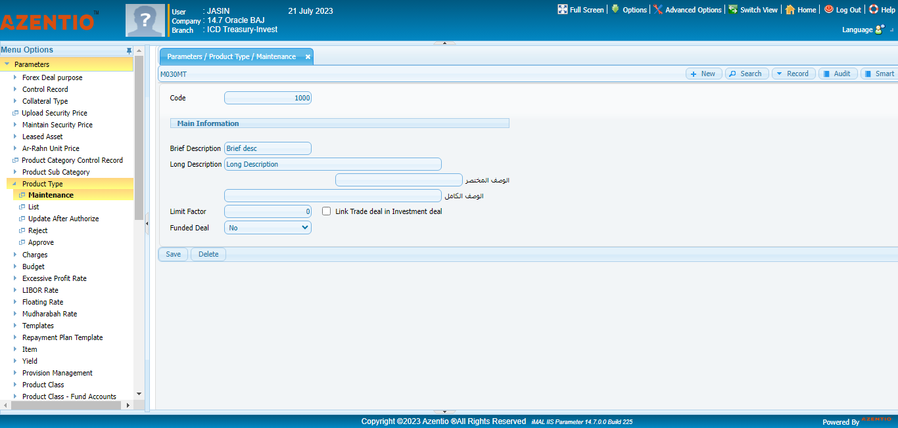Then Delete Product Type CreatediisParamsStepdefinitions.HooksClass.addScreenshot(io.cucumber.java.Scenario)screenshot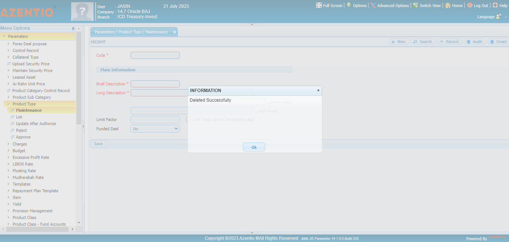And Close Product Type maintenance ScreeniisParamsStepdefinitions.HooksClass.addScreenshot(io.cucumber.java.Scenario)screenshot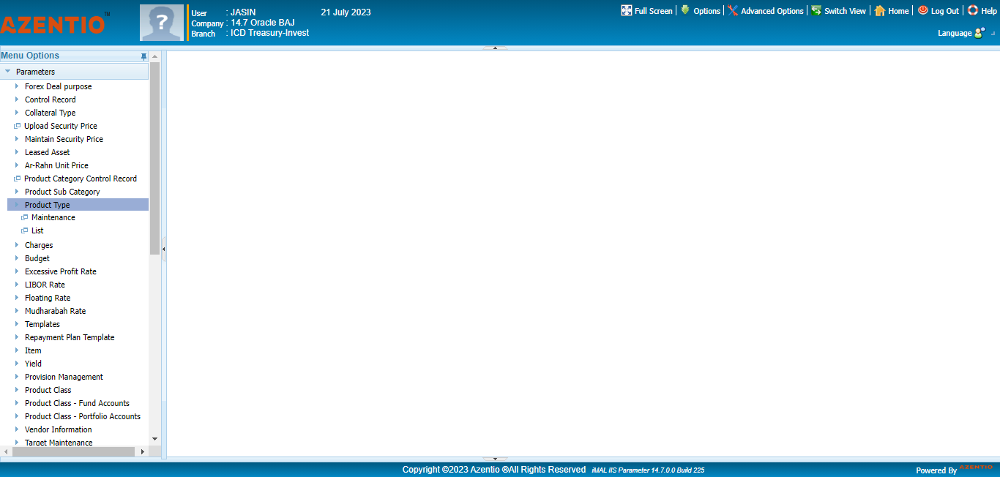
Then log into IISP with valid credentialsiisParamsStepdefinitions.HooksClass.addScreenshot(io.cucumber.java.Scenario)screenshotAnd Click on Parameters Root OPTiisParamsStepdefinitions.HooksClass.addScreenshot(io.cucumber.java.Scenario)screenshotGiven Open product type maintenanceiisParamsStepdefinitions.HooksClass.addScreenshot(io.cucumber.java.Scenario)screenshot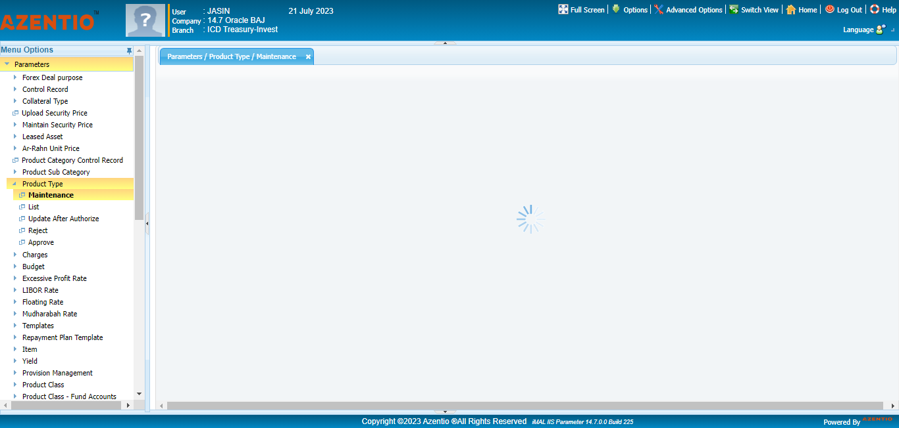And Input product Type Values and saveiisParamsStepdefinitions.HooksClass.addScreenshot(io.cucumber.java.Scenario)screenshot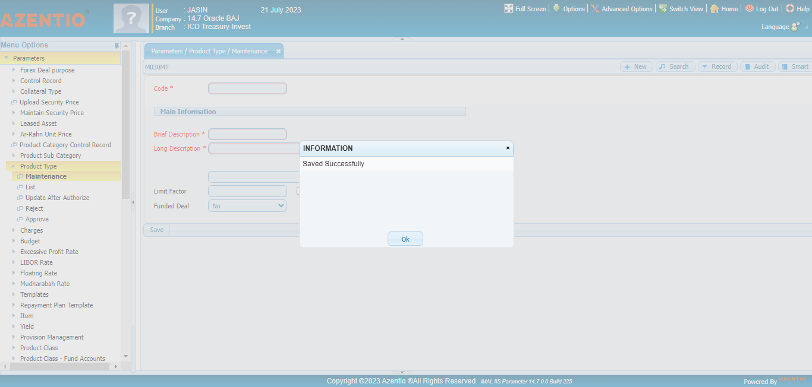And Retrieve Saved Product Type detailsiisParamsStepdefinitions.HooksClass.addScreenshot(io.cucumber.java.Scenario)screenshot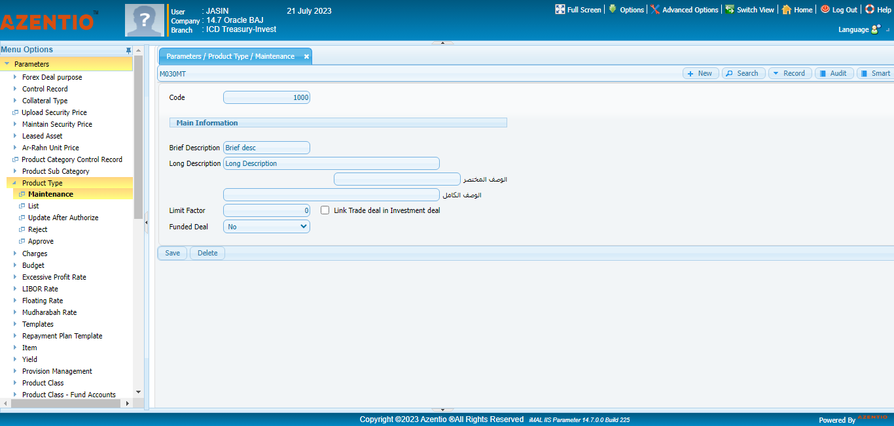Then Delete Product Type CreatediisParamsStepdefinitions.HooksClass.addScreenshot(io.cucumber.java.Scenario)screenshot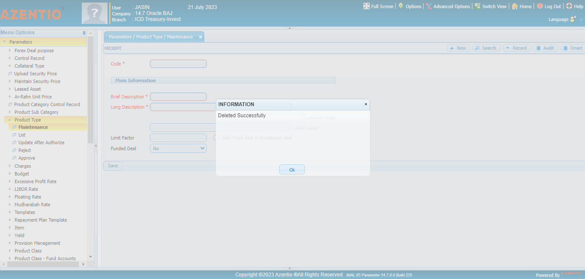And Close Product Type maintenance ScreeniisParamsStepdefinitions.HooksClass.addScreenshot(io.cucumber.java.Scenario)screenshot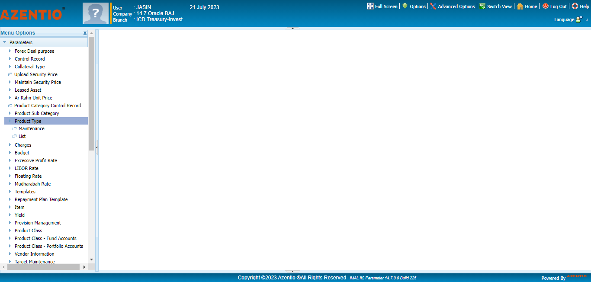 -
IIS Parameters Module -Settlement Policy
22:21:59 PM / 03:41:396 Fail
IIS Parameters Module -Settlement Policy
07.21.2023 22:21:59 07.22.2023 03:55:40 03:41:396 · #test-id=160FailCURD Testing of Settlement PolicyGiven User Navigate to IISP URL loginiisParamsStepdefinitions.HooksClass.addScreenshot(io.cucumber.java.Scenario)screenshot Then log into IISP with valid credentialsiisParamsStepdefinitions.HooksClass.addScreenshot(io.cucumber.java.Scenario)screenshotAnd Click on Parameters Root OPTiisParamsStepdefinitions.HooksClass.addScreenshot(io.cucumber.java.Scenario)screenshotAnd User Opened Settlement Policy Miantenance OPTiisParamsStepdefinitions.HooksClass.addScreenshot(io.cucumber.java.Scenario)screenshot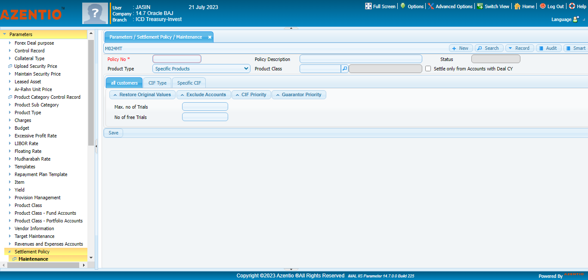When User Input Mian Informations and CIF InformationsiisParamsStepdefinitions.HooksClass.addScreenshot(io.cucumber.java.Scenario)screenshot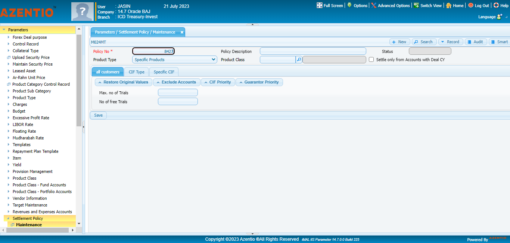And User Save Settlement Policy DataStep skippedAnd User Retrieve and Delate DataStep skippedThen User validate the outcomes and Close BrowserStep skipped
Then log into IISP with valid credentialsiisParamsStepdefinitions.HooksClass.addScreenshot(io.cucumber.java.Scenario)screenshotAnd Click on Parameters Root OPTiisParamsStepdefinitions.HooksClass.addScreenshot(io.cucumber.java.Scenario)screenshotAnd User Opened Settlement Policy Miantenance OPTiisParamsStepdefinitions.HooksClass.addScreenshot(io.cucumber.java.Scenario)screenshot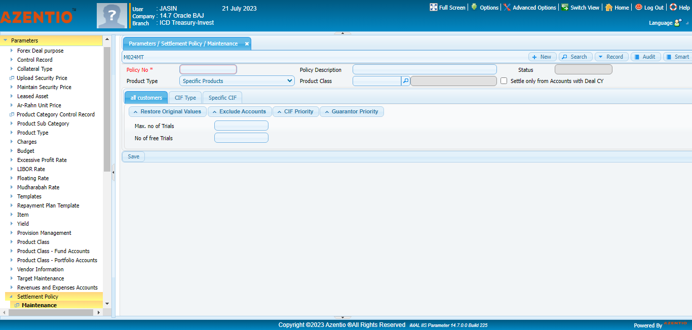When User Input Mian Informations and CIF InformationsiisParamsStepdefinitions.HooksClass.addScreenshot(io.cucumber.java.Scenario)screenshot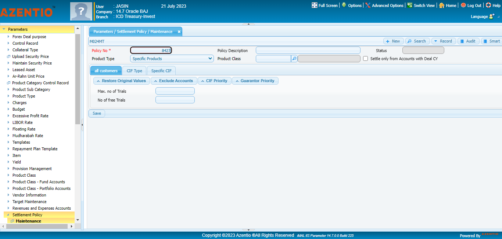And User Save Settlement Policy DataStep skippedAnd User Retrieve and Delate DataStep skippedThen User validate the outcomes and Close BrowserStep skipped -
IIS Parameters Module -Target Miantenance Screen
03:55:40 AM / 37:11:016 Fail
IIS Parameters Module -Target Miantenance Screen
07.22.2023 03:55:40 07.22.2023 15:02:51 37:11:016 · #test-id=181FailCURD Testing of the Target Miantenance ScreenGiven User Navigate to IISP URL loginiisParamsStepdefinitions.HooksClass.addScreenshot(io.cucumber.java.Scenario)screenshot Then log into IISP with valid credentialsiisParamsStepdefinitions.HooksClass.addScreenshot(io.cucumber.java.Scenario)screenshot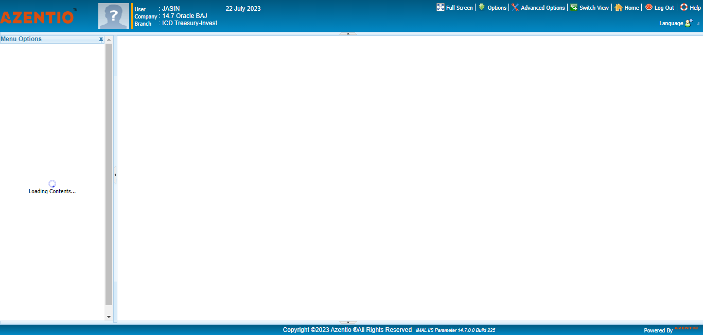And Click on Parameters Root OPTiisParamsStepdefinitions.HooksClass.addScreenshot(io.cucumber.java.Scenario)screenshot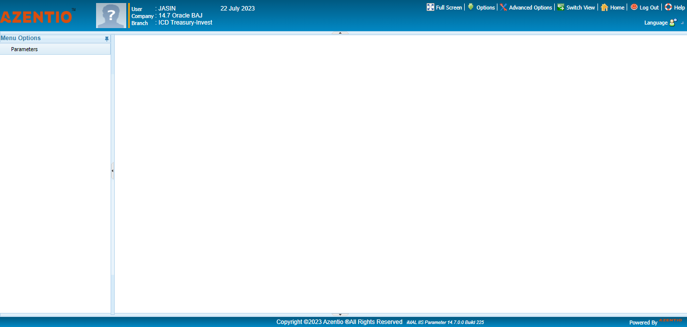Then Navigate to Target Maintenance ScreeniisParamsStepdefinitions.HooksClass.addScreenshot(io.cucumber.java.Scenario)screenshot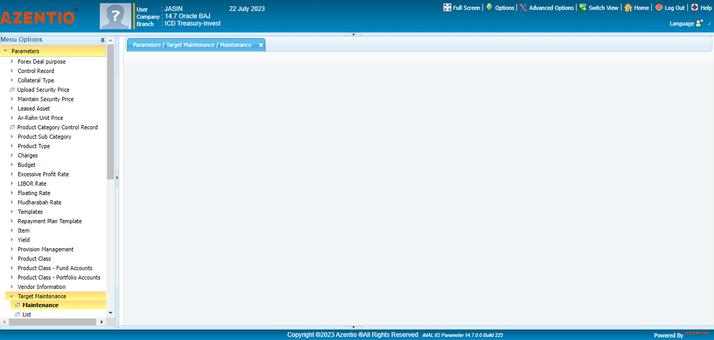Given User Select Input Product class,country,year,Target AmountiisParamsStepdefinitions.HooksClass.addScreenshot(io.cucumber.java.Scenario)screenshot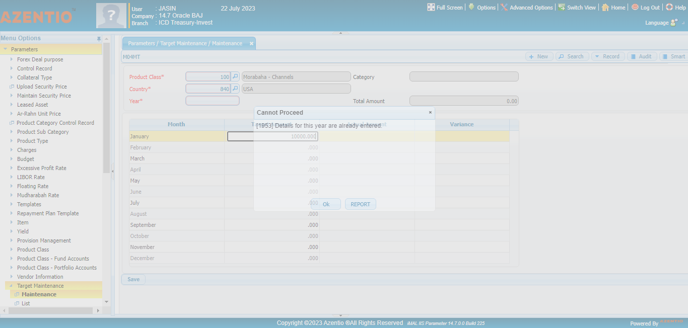Then Save Target MaintenaceiisParamsStepdefinitions.HooksClass.addScreenshot(io.cucumber.java.Scenario)screenshot
Then log into IISP with valid credentialsiisParamsStepdefinitions.HooksClass.addScreenshot(io.cucumber.java.Scenario)screenshot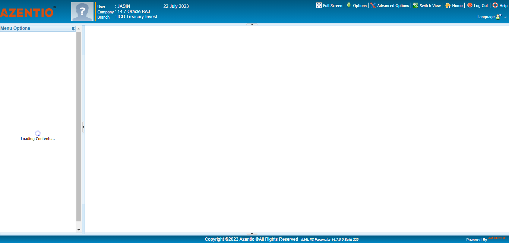And Click on Parameters Root OPTiisParamsStepdefinitions.HooksClass.addScreenshot(io.cucumber.java.Scenario)screenshot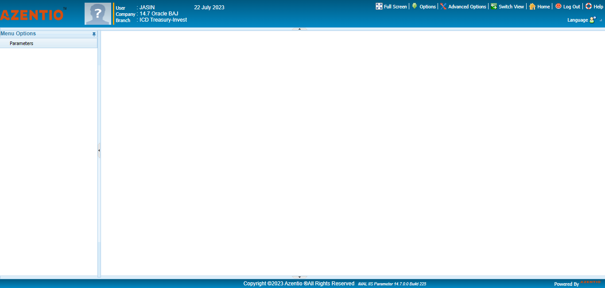Then Navigate to Target Maintenance ScreeniisParamsStepdefinitions.HooksClass.addScreenshot(io.cucumber.java.Scenario)screenshot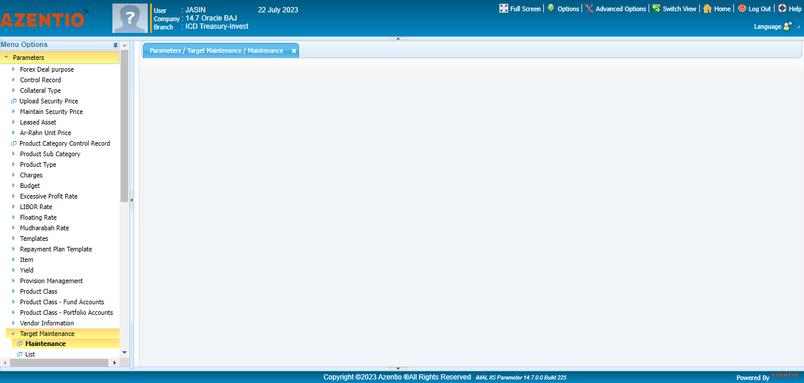Given User Select Input Product class,country,year,Target AmountiisParamsStepdefinitions.HooksClass.addScreenshot(io.cucumber.java.Scenario)screenshot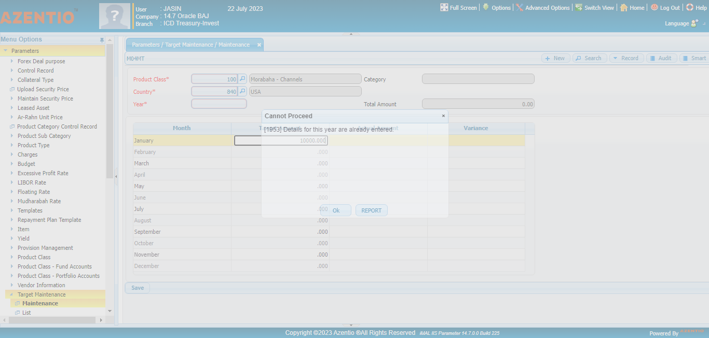Then Save Target MaintenaceiisParamsStepdefinitions.HooksClass.addScreenshot(io.cucumber.java.Scenario)screenshot And Retrieve Saved Target MaintenaceStep skippedThen Delete Target Maintenace CreatedStep skippedAnd Close Target Maintenace ScreenStep skipped
And Retrieve Saved Target MaintenaceStep skippedThen Delete Target Maintenace CreatedStep skippedAnd Close Target Maintenace ScreenStep skipped -
IIS Parameter Vendor Information
15:02:51 PM / 04:12:295 Fail
IIS Parameter Vendor Information
07.22.2023 15:02:51 07.22.2023 20:37:04 04:12:295 · #test-id=204FailCURD testing of Vendor Information ScreenGiven User Navigate to IISP URL loginiisParamsStepdefinitions.HooksClass.addScreenshot(io.cucumber.java.Scenario)screenshot Then log into IISP with valid credentialsiisParamsStepdefinitions.HooksClass.addScreenshot(io.cucumber.java.Scenario)screenshotAnd Click on Parameters Root OPTiisParamsStepdefinitions.HooksClass.addScreenshot(io.cucumber.java.Scenario)screenshot
Then log into IISP with valid credentialsiisParamsStepdefinitions.HooksClass.addScreenshot(io.cucumber.java.Scenario)screenshotAnd Click on Parameters Root OPTiisParamsStepdefinitions.HooksClass.addScreenshot(io.cucumber.java.Scenario)screenshot Then User Click on Vendor Information Maitenance LinkiisParamsStepdefinitions.HooksClass.addScreenshot(io.cucumber.java.Scenario)screenshot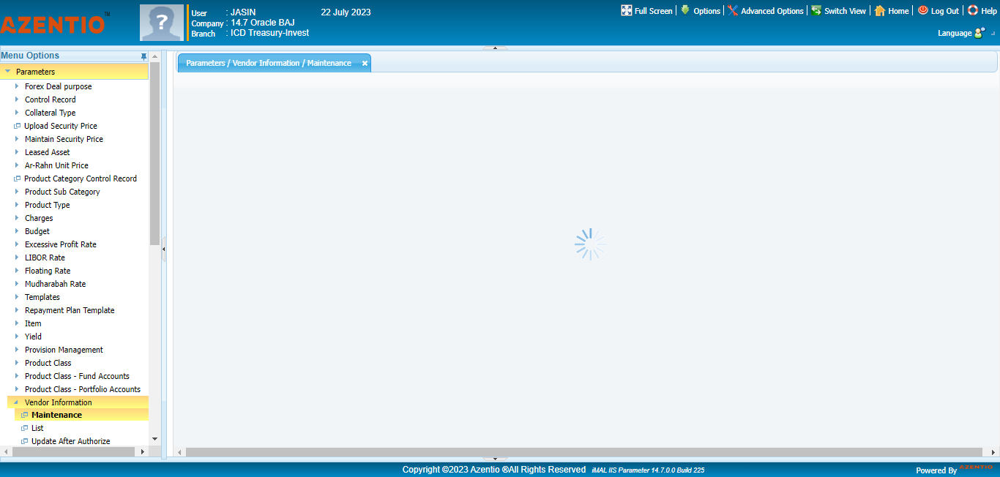Then User Click on Add OptioniisParamsStepdefinitions.HooksClass.addScreenshot(io.cucumber.java.Scenario)screenshot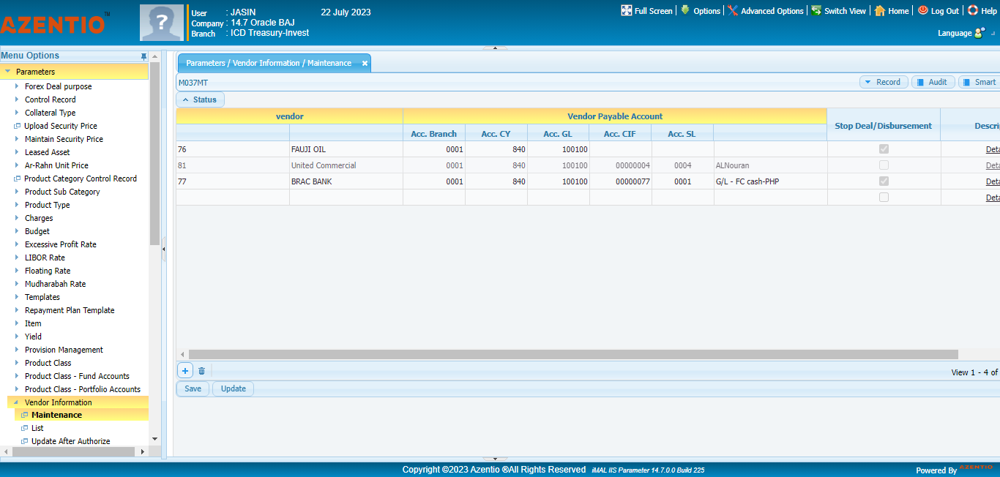And User Inputs dataiisParamsStepdefinitions.HooksClass.addScreenshot(io.cucumber.java.Scenario)screenshot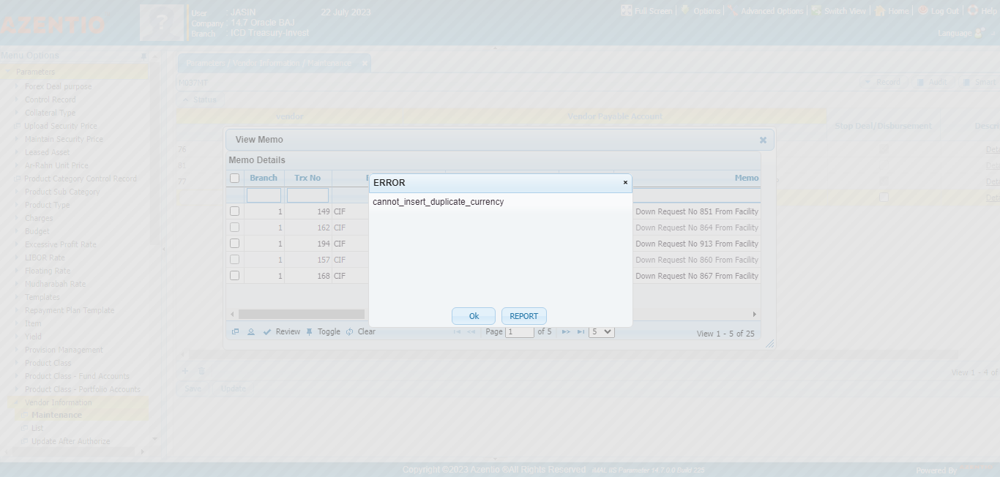Then User Save Vendor InformationiisParamsStepdefinitions.HooksClass.addScreenshot(io.cucumber.java.Scenario)screenshot
Then User Click on Vendor Information Maitenance LinkiisParamsStepdefinitions.HooksClass.addScreenshot(io.cucumber.java.Scenario)screenshot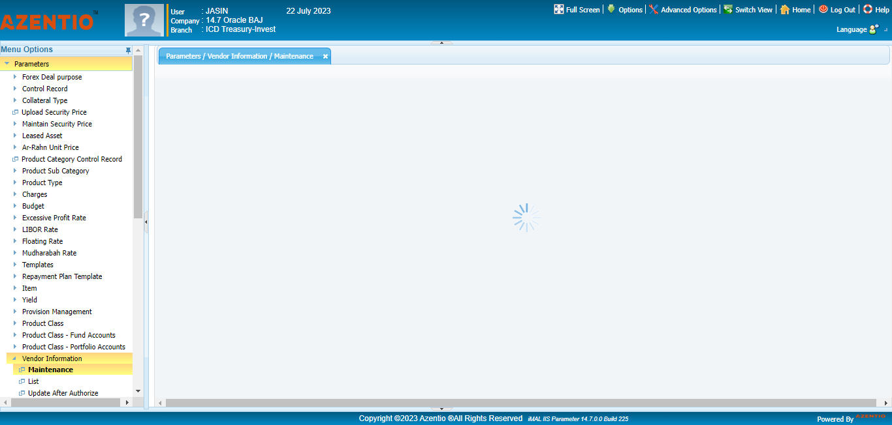Then User Click on Add OptioniisParamsStepdefinitions.HooksClass.addScreenshot(io.cucumber.java.Scenario)screenshot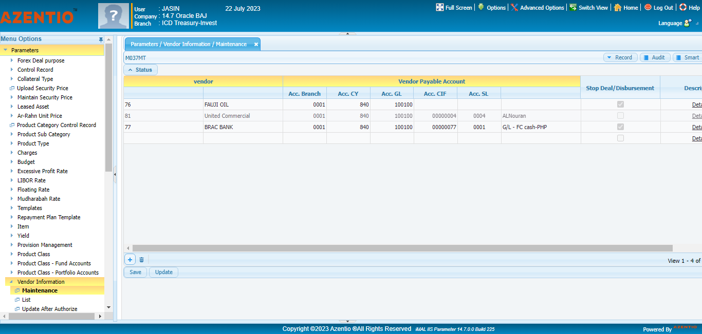And User Inputs dataiisParamsStepdefinitions.HooksClass.addScreenshot(io.cucumber.java.Scenario)screenshot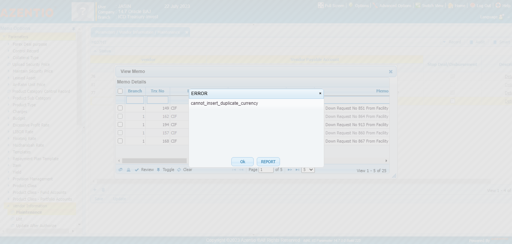Then User Save Vendor InformationiisParamsStepdefinitions.HooksClass.addScreenshot(io.cucumber.java.Scenario)screenshot Then User Close Vendor Information TabStep skipped
Then User Close Vendor Information TabStep skipped -
Yeild-Yeild Roster
20:37:04 PM / 03:43:659 Fail
Yeild-Yeild Roster
07.22.2023 20:37:04 07.22.2023 21:10:47 03:43:659 · #test-id=225FailCURD Testing of Yeild RosterGiven User Navigate to IISP URL loginiisParamsStepdefinitions.HooksClass.addScreenshot(io.cucumber.java.Scenario)screenshot Then log into IISP with valid credentialsiisParamsStepdefinitions.HooksClass.addScreenshot(io.cucumber.java.Scenario)screenshotAnd Click on Parameters Root OPTiisParamsStepdefinitions.HooksClass.addScreenshot(io.cucumber.java.Scenario)screenshotAnd User Click on Yeild Roster Maintenance OPTiisParamsStepdefinitions.HooksClass.addScreenshot(io.cucumber.java.Scenario)screenshot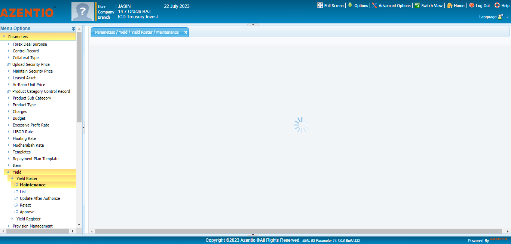When User Input Main and Roster DetailsiisParamsStepdefinitions.HooksClass.addScreenshot(io.cucumber.java.Scenario)screenshot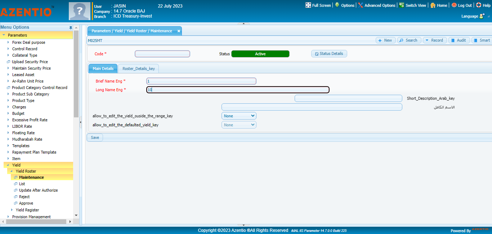Then User Save Roster DetailsiisParamsStepdefinitions.HooksClass.addScreenshot(io.cucumber.java.Scenario)screenshot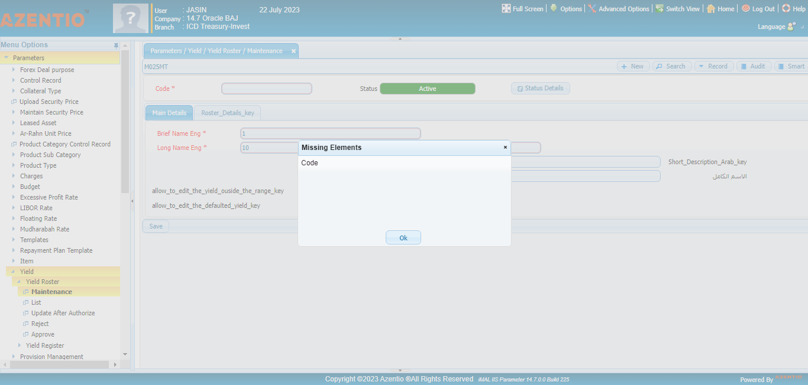And User Retrieve Saved DataStep skippedThen User Delete Roster DetailsStep skipped
Then log into IISP with valid credentialsiisParamsStepdefinitions.HooksClass.addScreenshot(io.cucumber.java.Scenario)screenshotAnd Click on Parameters Root OPTiisParamsStepdefinitions.HooksClass.addScreenshot(io.cucumber.java.Scenario)screenshotAnd User Click on Yeild Roster Maintenance OPTiisParamsStepdefinitions.HooksClass.addScreenshot(io.cucumber.java.Scenario)screenshot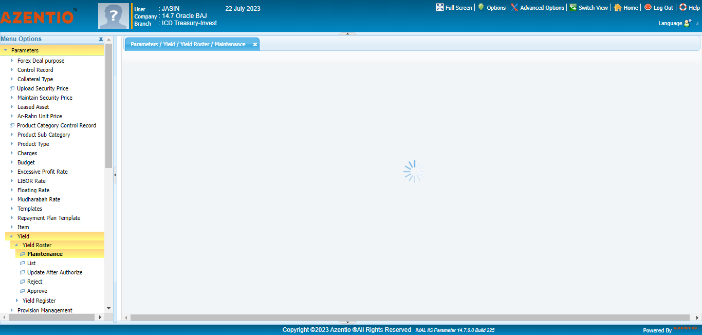When User Input Main and Roster DetailsiisParamsStepdefinitions.HooksClass.addScreenshot(io.cucumber.java.Scenario)screenshot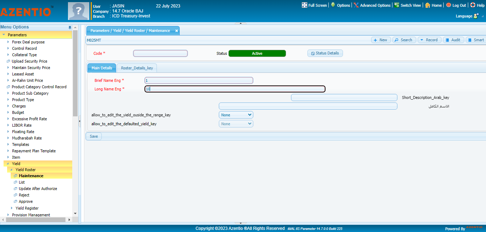Then User Save Roster DetailsiisParamsStepdefinitions.HooksClass.addScreenshot(io.cucumber.java.Scenario)screenshot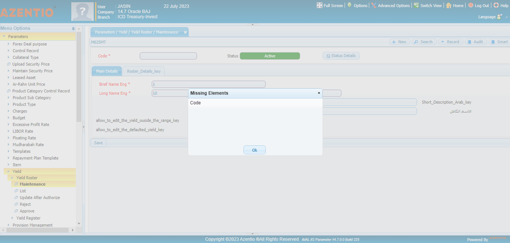And User Retrieve Saved DataStep skippedThen User Delete Roster DetailsStep skipped -
Yeild-Yeild Register
21:10:47 PM / 30:08:975 Fail
Yeild-Yeild Register
07.22.2023 21:10:47 07.22.2023 21:10:56 30:08:975 · #test-id=246FailCURD Testing of Yeild RosterGiven User Navigate to IISP URL loginiisParamsStepdefinitions.HooksClass.addScreenshot(io.cucumber.java.Scenario)screenshotThen log into IISP with valid credentialsiisParamsStepdefinitions.HooksClass.addScreenshot(io.cucumber.java.Scenario)screenshot And Click on Parameters Root OPTiisParamsStepdefinitions.HooksClass.addScreenshot(io.cucumber.java.Scenario)screenshot
And Click on Parameters Root OPTiisParamsStepdefinitions.HooksClass.addScreenshot(io.cucumber.java.Scenario)screenshot And User Click on Yeild Register Maintenance OPTiisParamsStepdefinitions.HooksClass.addScreenshot(io.cucumber.java.Scenario)screenshotWhen User Input Yeild Register DetailsStep skippedThen User Save Register DetailsStep skippedAnd User Retrieve Saved Yeild Register DataStep skippedThen User Delete Yeild RegisterStep skipped
And User Click on Yeild Register Maintenance OPTiisParamsStepdefinitions.HooksClass.addScreenshot(io.cucumber.java.Scenario)screenshotWhen User Input Yeild Register DetailsStep skippedThen User Save Register DetailsStep skippedAnd User Retrieve Saved Yeild Register DataStep skippedThen User Delete Yeild RegisterStep skipped
Started
Jul 21, 2023 04:44:41 PM
Ended
Jul 22, 2023 09:10:56 PM
Features Passed
4
Features Failed
8
Features
Scenarios
Steps
Timeline
System/Environment
| Name | Value |
|---|---|
| version | 10 |
| os | windows |
-
org.openqa.selenium.NoSuchWindowException
1 tests
org.openqa.selenium.NoSuchWindowException
1 failedStatus Timestamp TestName Fail 16:48:08 PM Then Save Asset Details IIS Parameters Module - Leased Asset maintenance Screen.CRUD testing For Charge Maintenance Screen.Then Save Asset DetailsFail 22:21:31 PM iisParamsStepdefinitions.HooksClass.addScreenshot(io.cucumber.java.Scenario) IIS Parameters Module - Leased Asset maintenance Screen.CRUD testing For Charge Maintenance Screen.iisParamsStepdefinitions.HooksClass.addScreenshot(io.cucumber.java.Scenario) -
org.openqa.selenium.TimeoutException
1 tests
org.openqa.selenium.TimeoutException
1 failedStatus Timestamp TestName Fail 16:45:09 PM Then Save BoardMembers Details IIS Parameters Module - Board Members maintenance Screen.CRUD testing For Board Members Maintenance Screen.Then Save BoardMembers DetailsFail 22:22:19 PM When User Input Mian Informations and CIF Informations IIS Parameters Module -Settlement Policy.CURD Testing of Settlement Policy.When User Input Mian Informations and CIF InformationsFail 03:56:10 AM Then Save Target Maintenace IIS Parameters Module -Target Miantenance Screen.CURD Testing of the Target Miantenance Screen.Then Save Target MaintenaceFail 15:03:42 PM Then User Save Vendor Information IIS Parameter Vendor Information.CURD testing of Vendor Information Screen.Then User Save Vendor InformationFail 20:37:27 PM Then User Save Roster Details Yeild-Yeild Roster.CURD Testing of Yeild Roster.Then User Save Roster Details -
io.cucumber.java.PendingException
1 tests
io.cucumber.java.PendingException
1 failedStatus Timestamp TestName Fail 21:10:56 PM And User Click on Yeild Register Maintenance OPT Yeild-Yeild Register.CURD Testing of Yeild Roster.And User Click on Yeild Register Maintenance OPT -
org.openqa.selenium.NoSuchElementException
1 tests
org.openqa.selenium.NoSuchElementException
1 failedStatus Timestamp TestName Fail 16:46:25 PM Then Save Deviation Details IIS Parameters Module - Deviation maintenance Screen.CRUD testing For Deviation Maintenance Screen.Then Save Deviation Details